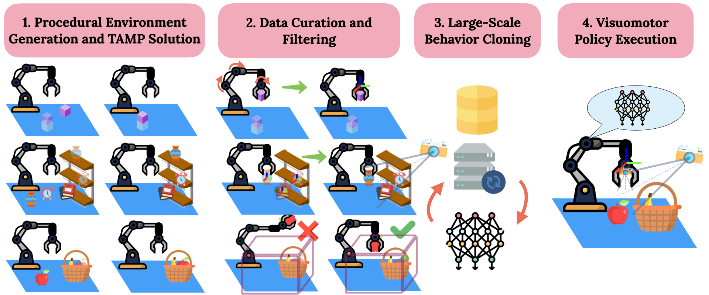
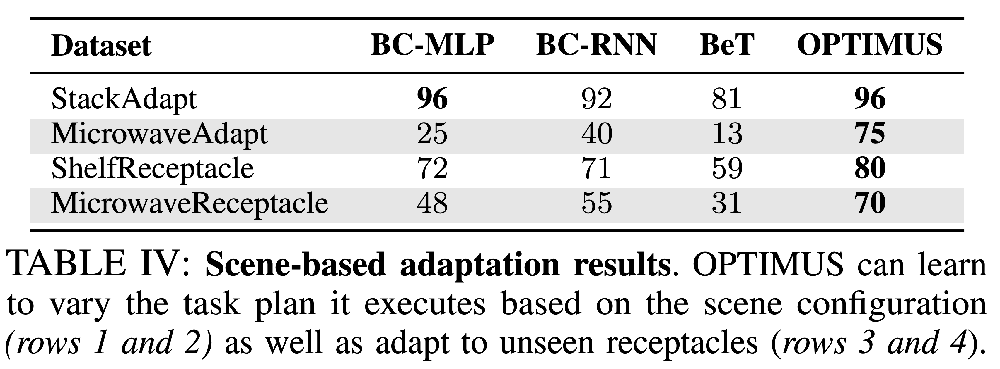

Offline Pretrained TAMP Imitation System

We generate a variety of tasks with differing initial configurations and goals. Next, we transform TAMP joint space demonstrations to task space, go from privileged scene knowledge in TAMP to visual observations and prune TAMP demonstrations based on workspace constraints. Finally, we perform large-scale behavior cloning using a Transformer-based architecture and execute the visuomotor policies.
Optimus enables visuomotor policies to solve manipulation tasks with up to 8 stages

Optimus can solve tasks requiring obstacle awareness and skills beyond pick-and-place.
Optimus can distill TAMP's task planning and scene generalization capabilities.

Large Scale Evaluation
Optimus produces TAMP supervised visuomotor policies that can solve over 300 manipulation tasks with up to 72 different objects, achieving success rates of over 70%